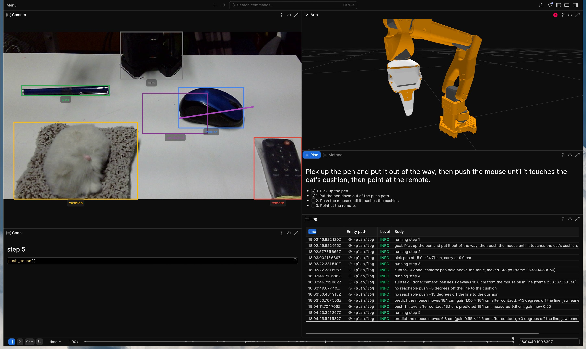
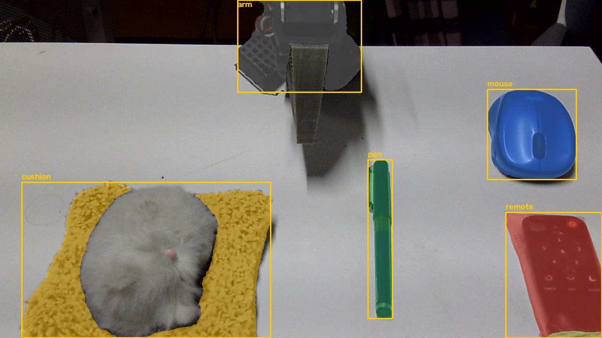
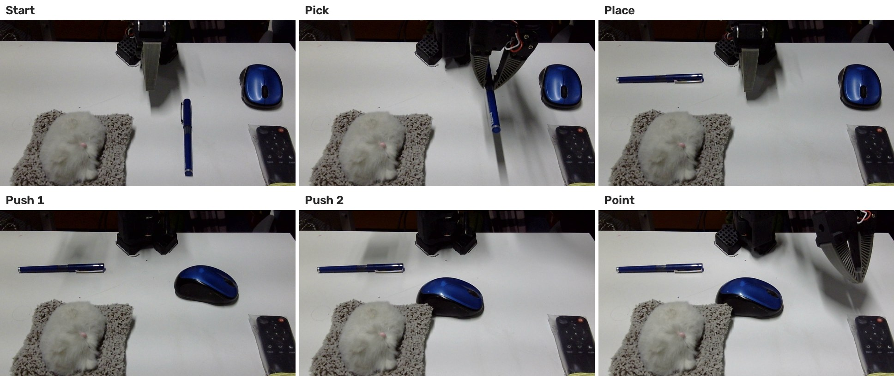
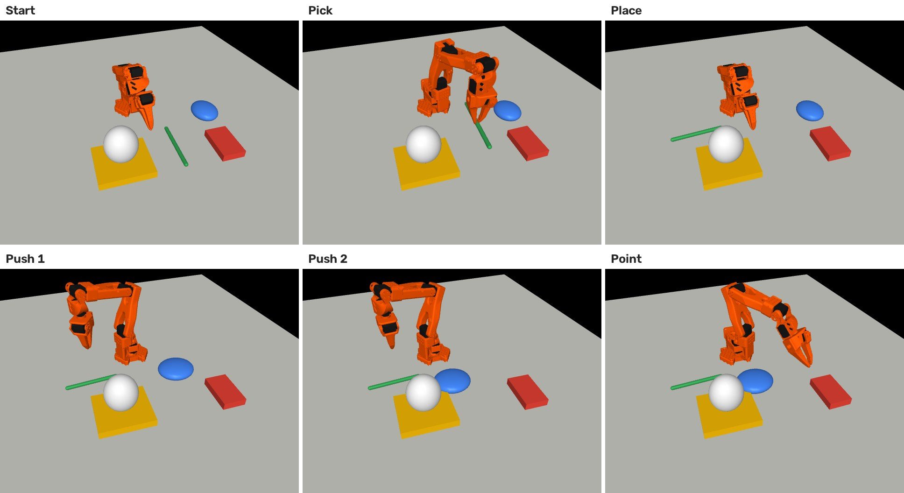
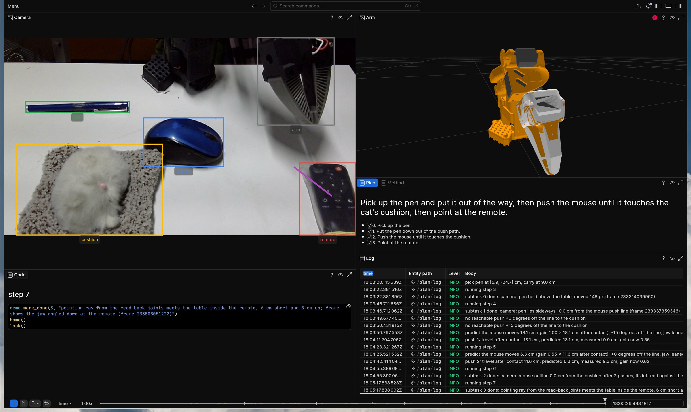
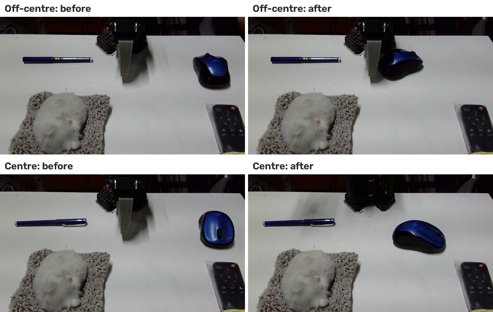
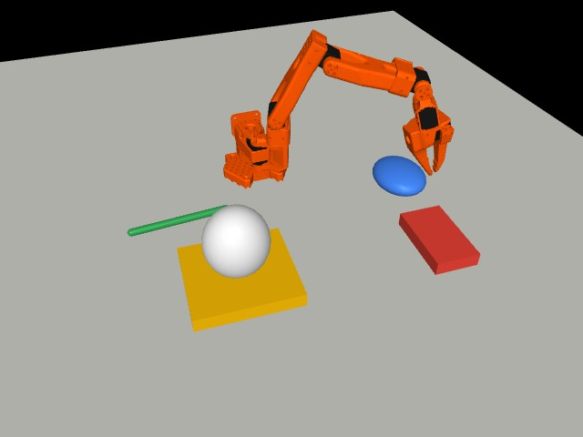
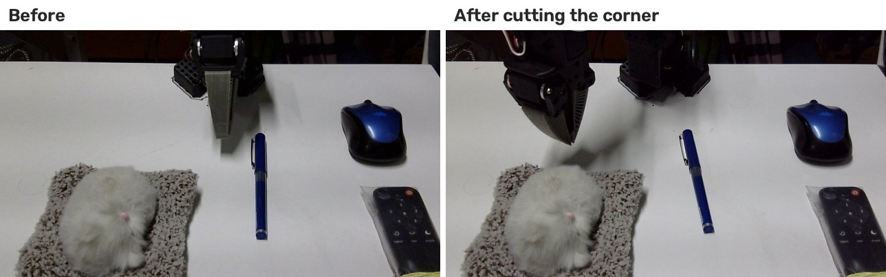
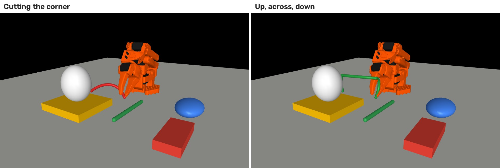

Code as policy on a real SO-101
I wanted to see how far Claude Code gets on a real robot arm if you just let it drive. So it got an SO-101 and one webcam, and it ran the arm live, one skill call at a time. After every call it looks at the camera, and it only ticks something off when the frame says it is done. When things break (and they do, you still have to guide it), we fix the skill instead of the run, so whatever comes next starts with the fix.
We really have to build it so that it is forced to judge as it goes, like humans. That is how these MLLMs can catch unexpected behaviors. They can also figure things out on their own. Forcing it to make a world model, MuJoCo here, catches things which are expensive to catch in real life, and we need to find ways to model the world better for a given task!
The full setup will be open-sourced soon.
Video / Recording / The run / What I learned / Skills / Home
The task
"Pick up the pen and put it out of the way, then push the mouse until it touches the cat's cushion, then point at the remote." The cat is a plush toy, no cats were pushed.
The recording
Everything it saw and did is in one Rerun recording, and you can scrub through it right here. The viewer is about 60 MB, so it waits for a click. Or grab the .rrd.
Rerun 0.40 in the browser. Works best on a laptop.

The run
OWLv2 finds each object from a text prompt, SAM 2.1 cuts it out, and a homography puts it on the table in cm. That is all it knows about the desk.



Before each push it predicts how far the mouse will go, then measures it. On the first push it guessed 18.1 cm and got 9.9, so it refit and guessed 6.3 for the second one, which went 9.3 and put the mouse against the cushion.

What I learned
1. You need a live system that judges as it goes, like we do
Judging every frame as it went, it caught its first push spinning the mouse into the base, and changed where it pushes.

2. It figures things out on its own
The straight push was out of reach, so it turned the push 15 degrees and leaned the jaw 20 to get there. It came up with that itself after a few earlier pushes could not reach, added it to the skill, and used it here. These models can pick things up on their own if you leave them room, so I would not be surprised to see the bitter lesson show up here too.
3. Modelling is worth it
Every step ran first in a MuJoCo copy of the arm and the desk. Finding out you can't reach something costs nothing there. On the real arm it costs a failed move, or something on the floor. The copy caught three of these before the arm ever moved:
- it could not carry the pen at the 10 cm it asked for, only 9 to 9.5,
- the first push had to start where the jaw could not reach pointing straight down, so it leans out instead (below),
- pointing at the remote was impossible until it aimed from the joint the arm actually turns around, not the middle of the base.

4. Go around obstacles, not past them
The first move out of rest went straight for its target, swinging the gripper sideways while it was still low, right next to the pen, and knocked it.

Now every move goes up first, across at 8 cm, then down.

Skills
The library as it stands. Each skill checks its own result and says what it measured.
| Skill | What it does |
|---|---|
look() | Where everything is on the table, in cm. |
pick_pen() | Jaws across the pen, grasp, lift, check it left the table. |
place_pen() | Carry, turn, drop, check where it landed. |
push_mouse() | Predict, push through the centre, measure, refit. |
point_at_remote() | Point the jaw at the remote, check where the ray lands. |
park(), home() | Out of the camera's way, or back to rest. |
Code: skills.py, kinematics.py, sam.py, sam_server.py, scene.py, demo.py and act.py.
Credits
Idea, setup and this page by me (MostlyK). Claude Code wrote the code, drove the arm and drafted parts of this page, and I reviewed all of it. Built on LeRobot (calibration), so101-inverse-kinematics (URDF and MuJoCo model), OWLv2 and SAM 2.1 (perception) and Rerun (recording).